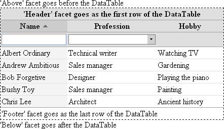
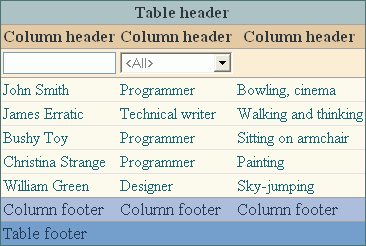

Version 3.0.0
DataTable |
|||||||||||||||||||||||||||||||||||||||||||||||||||||||||||||||||||||||||||||||||||||||||||||||||||||||||||||||||||||||||||||||||||||||||||||||||||||||||||||||||||||||||||||||||||||||||||||||||||||||||||||||||||||||||||||||||||||||||||||||||||||||||||||
|
Developer’s Guide Home
Installation and Configuration Common Concepts Components Index Border Layout Panel Calendar Chart Command Button Command Link Composite Filter Confirmation Data Table Date Chooser Day Table Drop Down Field Dynamic Image Folding Panel For Each Graphic Text Hint Label Input Text Input Textarea Layered Pane Level Indicator Popup Layer Popup Menu Select Boolean Checkbox Select Many Checkbox Select One Radio Spinner Suggestion Field Tabbed Pane Tab Set Tree Table Two List Selection Window Focus Load Bundle Scroll Position Ajax Framework Validation Framework Tag Reference API Reference |
Key FeaturesInteractive Data NavigationDataTable lets the user interactively query the data in virtually any way to meet a wide variety of usage scenarios.
Representing Complex Data StructuresThese features allow to represent and provide convenient user interface for displaying lists of complex entity types, for example where fields are grouped into complex sub-types, or the number of fields (aka columns) is dynamic.
Efficient Data HandlingThe following features allow optimizing the network traffic and memory.
Flexible Data VisualizationThere is a number of ways for customizing how a "raw" data is displayed to address various design requirements.
Specifying the ContentTo add the DataTable component to a page, use the <o:dataTable> tag. The content for the DataTable component is specified in the same way as for the standard JSF HtmlDataTable. The two basic things you need to do are to specify the list of rows, using the value attribute of the DataTable component, and the list of columns, with child column tags of the <o:dataTable> tag. The DataTable component supports several column types: <o:column>, <o:checkboxColumn> and <o:selectionColumn> (for more information, see the section Specifying Columns below). In addition you can specify dynamic number of columns using the <o:columns> tag. Child components of the column tag define the contents of the column cells based on the corresponding row's data. When the DataTable component is being rendered, it repeatedly makes current the row data for each row and renders all cells for that row based on the list of columns. Note that the same child components of a column are rendered in every cell of that column. So in order for these components to display different data for each respective row, you should use a request-scope variable referring to the current row's data (see section Request-Scope Variables). Specifying RowsThe list of rows is specified using the value attribute of the <o:dataTable> tag. This attribute should be configured as a value-binding expression that refers to either of these data types: array, collection, JDBC ResultSet, JSTL ResultSet. Note that unlike the standard HtmlDataTable component, you are allowed to specify not only a java.util.List implementation, but any implementation of the java.util.Collection interface as a value of the value attribute. Each object in the referenced list is called "row data" and will be used to display one row of data. Note that all row data objects in the collection that the value attribute retrieves should be not-null. If the value attribute references any other type of object, the DataTable component will display one row of data based on that object. Request-Scope VariablesWhen specifying child components of the DataTable or table's columns, you can use request-scope variables that reference the current row's parameters. There are two such variables. To use any of them, you should declare its name in the corresponding attribute of the <o:dataTable> tag:
In addition there are two more variables provided to configure an individual cell by the condition. These variables are available when specifying the condition for the <o:cell> and <o:cellStyle> tags:
Server-side event handlers can be aware of the row where an event occurs by checking the current row data or row index that can be retrieved with these request-scope variables. If the value is evaluated by a backing bean method, you can use the org.openfaces.util.Faces.var(String varName) method to retrieve a variable by its name. Model Row Objects RequirementsIn order for the DataTable's features to work properly, additional requirements are imposed on specifying the table data source. To store selected rows between requests, one of the following conditions should be met:
<o:dataTable var="product" value="#{ProductsList.products}" rowKey="#{product.id}"> ... </o:dataTable> If row data does not meet the requirements and the rowKey attribute is not defined, the table generates row keys based on row indexes. As a result, the features that require a row key may work improperly. For example, if some row is selected and the user changes the sort order, a different row with the same row index gets selected, and this may be the row with different data. Specifying ColumnsThe list of DataTable's columns is specified using the <o:column> child tags. Columns are used to split each row provided by the value attribute into cells. Child components of the <o:column> tag are used to render each cell of the current row. When the DataTable component is being rendered, it repeatedly makes current each row taken from value and renders all cells for that row based on the list of columns. Each table column defines the content of its header, footer, and body cells. The content for the body cells is specified using row request-scope variables (for more details about them, see the section Request-Scope Variables). In addition to the <o:column>, the DataTable component supports also two types of columns:
The DataTable also provides an ability to define dynamic number of columns. For more details about this feature please see section Specifying Dynamic Columns. Column FacetsA table column has the "header", "subHeader" and "footer" facets which you can use to specify the table header, sub-header and footer respectively. The "header" facet is usually used for displaying the column name, the "subHeader" facet usually contains the column filter component and the "footer" facet is normally used for displaying the column's total value, though naturally these are not the requirements and the purpose can be different depending on application design. The example below shows a two-column DataTable component with column headers. The first column displays product images and the second their names. The var attribute defines the "product" variable which is used by the columns' child components to retrieve data for the appropriate row. <o:dataTable var="product" value="#{ProductList.products}"> <o:column> <f:facet name="header"> <h:outputText value="Image" /> </f:facet> <h:graphicImage url="images/#{product.imageFileName}" /> </o:column> <o:column> <f:facet name="header"> <h:outputText value="Name" /> </f:facet> <h:outputText value="#{product.name}" /> </o:column> </o:dataTable> Specifying Header and FooterSome components bound to a DataTable such as a CompositeFilter component or column visibility popup menu require displaying column names. In cases when the "header" facet contains a UIInput component such as <h:outputText> the column name can be extracted from the facet's content automatically (the value of the first UIInput is taken), though it is not always possible, for example when an image is displayed in column's header or when another text should be used as a column's name in the bound components. To address these scenarios, each of the column tags allow specifying the "header" attribute where you can specify a string value to be used as column name. Another purpose of the "header" attribute and that's where another related attribute can also be useful is a replacement for the "header" and "footer" facet respectively. If there's no "header" facet and the value specified in the "header" attribute is Specifying Dynamic ColumnsIn addition to column types listed in section Specifying Columns the OpenFaces DataTable provides an ability to specify dynamic number of columns. To add dynamic columns to the DataTable, use the <o:columns> child tag of the <o:dataTable> tag. The list of the dynamic columns is specified using the value attribute. This attribute should be specified as a value-binding expression that refers to an array or a collection of objects that serve as column data objects. The <o:columns> tag results in adding one column per each object found in this collection. The column data objects must be serializable and correctly implement equals and hashCode methods. You should make sure to provide objects that identify their respective columns in any way that should be sufficient for distinguishing between columns when they are rendered or their properties are calculated. See below for the places where column data objects are used. Please note the var request-scope variable of the DataTable is not available when you specify the value attribute of the Columns. Most of the attributes of <o:columns> tag are analogous to their counterparts in the <o:column> tag but they have one valuable difference - an ability for the attributes to be specified as value binding expressions that allow specifying column attributes on a per-column basis. You need to use the column data request-scope variable in value binding expressions in order to specify column-specific attribute values. The name of this request-scope variable should be specified in the var attribute of the <o:columns> tag. When specifying child components of the <o:columns> tag, the request-scope variables declared in the var and rowIndexVar attributes of the <o:dataTable> tag can be used. In addition you can refer to the current column when specifying child components of the <o:columns> tag using the column data request scope variable. The <o:columns> tag does not have the id or rendered attributes. However, you can specify the identifier and a flag that indicates whether or not the column is visible for each dynamic column using the columnId and columnRendered attributes of the <o:columns> tag, respectively. These attributes should be specified as value-binding expressions that refer to identifier or a flag indicating whether column is visible for each dynamic column. You can use a column data variable specified in the var attribute in the expression for these attributes. Please note that column identifiers evaluated for columns inside the <o:columns> tag are used in the same way as id attributes of ordinary <o:column> tags, so the identifiers evaluated using this expression should be unique in bounds of the containing DataTable. The following example demonstrates the usage of the <o:columns> tag: <o:dataTable value="#{TableBean.tableValue}" var="row"> <o:columns value="#{TableBean.dynamicColumns}" var="col" columnId="dynamicCol#{col}" columnRendered="#{TableBean.columnRendered}"> <f:facet name="header"> <h:outputText value="#{col}"/> </f:facet> <h:outputText value="#{row.dynamicColumns[col]}"/> </o:columns> </o:dataTable> As an ordinary <o:column> tag, the <o:columns> tag supports sorting, filtering, style customization and columns-specific events. Grouping ColumnsIt is possible to combine columns into groups to reflect their logical connections. This can be done by enclosing several column tags into the <o:columnGroup> tag. This tag has the set of features similar to that of ordinary columns:
Here's a simple example of using column groups: <o:dataTable value="#{TableBean.products}" var="product"> <o:column> <f:facet name="header"> <h:outputText value="Name"/> </f:facet> <h:outputText value="#{product.name}"/> </o:column> <o:columnGroup> <f:facet name="header"> <h:outputText value="Price"/> </f:facet> <o:column> <f:facet name="header"> <h:outputText value="Retail"/> </f:facet> <h:outputText value="#{product.retailPrice}"/> </o:column> <o:column> <f:facet name="header"> <h:outputText value="Wholesale"/> </f:facet> <h:outputText value="#{product.wholesalePrice}"/> </o:column> </o:columnGroup> <o:columnGroup> <f:facet name="header"> <h:outputText value="Features"/> </f:facet> <o:column> <f:facet name="header"> <h:outputText value="Feature 1"/> </f:facet> <h:outputText value="#{product.features.feature1}"/> </o:column> <o:column> <f:facet name="header"> <h:outputText value="Feature 2"/> </f:facet> <h:outputText value="#{product.features.feature2}"/> </o:column> </o:columnGroup> </o:dataTable> Note that there are both the columns that are enclosed into <o:columnGroup> tag and the column that is not part of any group. It is also possible to create nested column groups, thus establishing an arbitrary hierarchy of columns. It is possible to emphasize separation of columns into groups with a feature of customizing gridlines for different levels of columns (or groups). See the Column Group Separators section for details. Changing Column OrderYou can change the order of columns in the DataTable component by using the columnsOrder attribute. It should be declared as a value-binding expression, and the bound value should be a list containing column IDs for each column in the order you want them to be displayed. If the columnsOrder attribute is not specified, all the columns are rendered in the order they are defined. Otherwise, only the columns whose IDs are included in this list are rendered. The following example shows columns that are explicitly ordered using the columnsOrder attribute. <o:dataTable var="product" value="#{ProductsList.products}" columnsOrder="#{ProductsList.columnsOrder}"> <o:column id = "imageColumn"> ... </o:column> <o:column id = "nameColumn"> ... </o:column> <o:column id = "priceColumn"> ... </o:column> <o:column id = "quantityColumn"> ... </o:column> </o:dataTable> Drag & Drop Column ReorderingIt is possible to let the user reorder columns interactively with drag & drop by adding the <o:columnReordering> tag into the <o:dataTable> tag. When this feature is turned on, the user can drag the column by its header and drop it into the appropriate place in-between columns. The current drop target is highlighted for user's convenience. In case of the tables with horizontal scrolling enabled (see the Content Scrolling section), the autoscroll areas will pop up on the header's left and/or right sides allowing the user to scroll the table while dragging the column. The order of columns is read from and saved to the columnsOrder attribute of <o:dataTable> tag, so you can bind this attribute to your backing bean if you'd like to receive the column order changes. See the Changing Column Order section for the description of columnsOrder attribute. Mere adding of the <o:columnReordering> tag will turn on the reordering behavior though you can also configure the attributes of this tag to adjust styles and appearance of various parts of UI that participate in the reordering process. Dragging the column header creates a visual copy of the header cell that the user is dragging, and it's possible to apply an additional style to the dragged cell using the draggedCellStyle and draggedCellClass attributes. By default, the dragged cell is displayed as semitransparent and the transparency level can be configured using the draggedCellTransparency attribute, where 0.0 corresponds to the fully-opaque display, and 1.0 corresponds to the fully-transparent display. The appearance of drop target can be customized with the following attributes
Finally, the appearance of the auto-scroll areas that appear on the horizontally-scrollable tables can be configured with the following attributes:
Here's an example of turning on the column reordering feature for DataTable with customizing the drop target color and binding the column order to a backing bean: <o:dataTable ...
columnsOrder="#{ProductsList.columnsOrder}">
<o:columnReordering dropTargetStyle="background: red"/>
...
</o:dataTable>
Column ResizingIt is possible to let the user resize columns by adding the <o:columnResizing> tag as a child of <o:dataTable> tag. When column resizing is turned on, the user can drag the column header separators to resize columns. The total table width is not affected by the process of resizing columns. It should also be noted that if table width doesn't have a fixed width specification, for example when it is declared to have 100% width, then table layout behavior is slightly changed when column resizing is turned on. The table is loaded with its width properly calculated using the specified relative width, though after the page is loaded the table's width is fixed and is not recalculated. The <o:columnResizing> tag can be added without specifying any attributes, though there are some optional configuration attributes. The resizeHandleWidth attribute specifies the size of the "dragging area" near the column header separator. This area can be wider than the separator itself to make it easier for the user to locate the draggable area. The minColWidth attribute can be used to specify the minimum width that a column can take after resizing. Both of these attributes can be specified in any CSS units except percent. Here's an example of adding the column resizing capability to a table: <o:dataTable var="product" value="#{ProductsList.products}" width="100%"> <o:columnResizing resizeHandleWidth="10px" minColWidth="50px"/> <o:column id = "imageColumn"> ... </o:column> ... </o:dataTable> Note There are also two per-column attributes that are applicable only when a table has the column resizing feature. It is possible to make certain column non-resizeable by assigning "false" to the column's resizeable attribute. There is also the possibility to specify the minimum resizing width on a per-column basis. Specifying the column's minResizingWidth attribute overrides the default minimum width value defined by the <o:columnResizing> tag. Column width changes made by the user can be persisted between different visits of the appropriate page using the <o:columnResizing> tag's resizingState attribute. This attribute can be bound to a backing bean property having the org.openfaces.component.table.ColumnResizingState type. This property will be written to save the current column widths when columns are resized, and will be read when the table is rendered next time. The additional <o:autoSaveState> attribute defines when the resizing state is sent to the server (and thus when the resizingState attribute binding is updated). By default it is set to true, which means that column widths are saved on-the-fly with Ajax requests after any column is resized. Setting this attribute to false will turn off the column width saving Ajax requests and will make the column widths data to be sent to the server along with the nearest form submission (or Ajax DataTable component submission). Displaying Column MenusIt is possible to add the column menu to allow performing the standard column operations such as sorting, showing and hiding columns, or to provide custom column-specific operations. The column menu feature is turned on by specifying the "columnMenu" facet. Specifying this facet makes a drop-down button to appear in the column's header when the user hovers over the header, and pressing this button shows the menu. You can either specify the standard column menu with the <o:columnMenu> tag in this facet, or a custom menu with the <o:popupMenu> facet. It is possible to customize the content and appearance of the standard menu by customizing the <o:columnMenu> tag's attributes and child tags. Adding any menu item tags inside of the <o:columnMenu> tag will replace the standard structure with the custom menu item hierarchy. This provides the full flexibility for reordering, restyling or removing the standard items and adding the custom ones. The standard menu items can be specified with the following tags:
Additionally you can place a <o:menuSeparator> tag to insert separators and a <o:menuItem> tag to add custom menu items. Similarly, you can avoid displaying the standard menu at all, and specify the popupMenu tag as the content of the "columnMenu" facet for an entirely custom column menu. Here's a simple example of displaying the customized menu, with two additional "Select Column" and "Unselect Column" menu items: <o:dataTable id="table" ...> ... <f:facet name="columnMenu"> <o:columnMenu indentStyle="color: yellow"> <o:sortAscendingMenuItem/> <o:sortDescendingMenuItem/> <o:hideColumnMenuItem/> <o:menuSeparator/> <o:menuItem value="Columns"> <o:columnVisibilityMenu/> </o:menuItem> <o:menuSeparator/> <o:menuItem value="Select Column" onclick="selectColumn(O$('form:table').getCurrentColumn().index);"/> <o:menuItem value="Unselect Column" onclick="unselectColumn(O$('form:table').getCurrentColumn().index);"/> </o:columnMenu> </f:facet> ... </o:dataTable> Note that in order to implement functionality for custom menu items, you can use the getCurrentColumn() client-side method to detect the column for which the popup menu is invoked. This function returns the client-side column object where only one field is currently available: index. This is a zero-based index of a column in a list of currently rendered columns. The standard menu and menu item tags can be customized with the same attributes as the usual popupMenu and <o:menuItem> tags (except some obvious non-applicable attributes such as subMenuImageUrl for sortAscendingMenuItem since it can't have a sub-menu, etc). The column visibility sub-menu (displayed as part of the standard menu or specified in a customized menu with the columnVisibilityMenu) has a two-fold way of detecting the column names for displaying in the menu. First, it checks the optional column's header attribute (which exists in all column tags), and if this attribute is not defined, then it inspects the content of the "header" facet of the appropriate column and takes the value of the first UIOutput component found in that facet (such as <h:outputText>). The appearance of the drop-down button that appears in the column header and invokes the column's popup menu can be customized with the "columnMenuButton" facet. This facet must contain the <o:captionButton> tag where you can customize all appearance properties for the menu invoker button. Note that the column visibility changes made with the column menu are reflected into the columnsOrder attribute of the <o:dataTable> tag, so you can bind that attribute to be able to save column visibility between different page visits. Concurrent Data ModificationsThe DataTable component allows you to insert any editable components in its cells, for example HTMLInputText, HTMLSelectManyCheckBox, HTMLSelectOneListBox, etc. However, in this case, a problem with concurrent data modification may arise. For example, while one user is editing some rows, the other can delete one of them. The DataTable component provides a mechanism to resolve such kind of problems. If row data meets the data source requirements, edited data will be saved properly, even if the row order has changed. Optionally, you can specify the rowDataByKey attribute. In this case, the data of edited rows is saved into the backing bean, even if this bean is already unavailable through the data source. A typical example is simultaneous editing of the same row(s) by different users. If the rowDataByKey attribute is not specified, deleted rows will be removed and edited data will be ignored. Table Headers and FootersThe DataTable component has the header and footer areas that are displayed as the first and last rows of the table and span the width of the component. The content of these areas can be specified with the "header" and "footer" facets of the <o:dataTable> tag. The styles for these areas can also be customized (see the section Section Styles). The DataTable component also has two special areas located right before and after the table content. The content of these areas can be specified with the "above" and "below" facets of the <o:dataTable> tag. Note that the content of all the facets described above is refreshed after Ajax requests that reload the entire DataTable content (as in the case of filtering and sorting updates). <o:dataTable var="person" value="#{PeopleList.person}" style="border:1px dotted gray;"> ... <f:facet name="above"> <h:outputText value="'Above' facet goes before the DataTable"/> </f:facet> <f:facet name="header"> <h:outputText value="'Header' facet goes as the first row of the DataTable"/> </f:facet> <f:facet name="footer"> <h:outputText value="'Footer' facet goes as the last row of the DataTable"/> </f:facet> <f:facet name="below"> <h:outputText value="'Below' facet goes after the DataTable"/> </f:facet> </o:dataTable> In the following figure, you can see all the facets defined in the previous example:  Displaying a Message for Empty DataIf there are no records to display in the cells of the DataTable component, a default message "No records" is displayed. You can turn it off by setting the noDataMessageAllowed attribute to "false" (by default, it is "true"). You can specify your own message by using the "noDataMessage" facet. To apply styles for the row displaying this message, use the noDataRowStyle and noDataRowClass attributes. If there is data in the data source but no records satisfy the current filtering settings (see the section Filtering below), then a different message "No records satisfying the filtering criteria" is displayed. You can change this message text by specifying the "noFilterDataMessage" facet. The example below shows a customized message for empty data. <o:dataTable var="product" value="#{ProductList.products}" noDataRowStyle="color:red; font-weight:bold; font-size:20pt"> <f:facet name="noDataMessage"> <h:outputText value="There is no data" /> </f:facet>... </o:dataTable> Content ScrollingIt is possible to configure the DataTable component to scroll its content when all rows (and/or columns) cannot fit within the allotted area. This can be done simply by placing the <o:scrolling> inside of the <o:dataTable> tag. Adding this attribute makes the table to show the vertical scrollbar allowing the user to scroll through the table's data rows. Header and footer rows remain fixed independent of scrolling. The <o:scrolling> tag makes it possible to turn on vertical or horizontal scrolling modes, or allow both scrolling directions at the same time. This can be done using the vertical and horizontal attributes of the <o:scrolling> tag, which are equal to true and false by default respectively. By default, assigning true to any of these attributes makes the appropriate scroll-bar to be displayed regardless of where all data (rows or columns) entirely fits in the visible area or not. You can set the autoScrollbars attribute to true to show the scrollbars only when there's something to scroll, so that they are automatically hidden when the data entirely fits in the visible area. It is possible to exclude one or more columns from horizontal scrolling and fix them on the table's left or right side by specifying the fixed attribute of the appropriate column(s) or column group(s). Note that only the first (and/or last) column(s) are allowed to be fixed, which means that you can't declare the fixed attribute for a column that resides in the middle of column list and is surrounded by non-fixed columns. You can also disable vertical scrolling by assigning false to the vertical attribute, so When the horizontal attribute is set to true, y The following example outlines the declaration of a table with both horizontal and vertical scrolling having its two first first columns fixed: <o:dataTable ...> <o:scrolling horizontal="true"/> <o:checkboxColumn fixed="true" .../> <o:column fixed="true" .../> <o:column .../> <o:column .../> ... </o:dataTable> The current scroll position can be detected and manipulated using the position property of the <o:scrolling> tag. This attribute should be bound to a variable of type java.awt.Point. SortingThe DataTable component provides sorting of displayed data based on the value of one of its columns. The user can change a sorting column and sort order by clicking on the column header. Data can be sorted only by "sorting-aware" columns. To make a column sortable, you should specify the sortingExpression attribute and optionally, the sortingComparator attribute for this column. The sortingExpression attribute defines the row's value that will be used during sorting. It should be declared as a value-binding expression. The sortingComparator attribute defines the comparator that is used to compare the values provided by the sortingExpression attribute. This attribute should be specified as a value-binding expression and should reference the object that implements the java.util.Comparator interface. If the sortingComparator attribute is not defined, sortingExpression should evaluate to either a primitive type or an object that implements the java.lang.Comparable interface, for example String. To perform case-insensitive comparison of String values, the sortingComparator attribute provides a special "caseInsensitiveText" value. In the following example, products in the table are sorted by name and price: <o:dataTable var="product" value="#{ProductsList.products}"> <o:column id="nameColumn" sortingExpression="#{product.name}" sortingComparator="caseInsensitiveText"> <f:facet name="header"> <h:outputText value="Name" /> </f:facet> <h:outputText value="#{product.name}" /> </o:column> <o:column id="priceColumn" sortingExpression="#{product.price}"> <f:facet name="header"> <h:outputText value="Price" /> </f:facet> <h:outputText value="#{product.price}" /> </o:column> </o:dataTable> Dynamic columns support sorting as well. Just like ordinary columns, dynamic columns can be made sortable by specifying the sortingEnabled attribute in <o:columns> tag. In this case, all dynamic columns become sortable. Though in some cases it's needed to make only a portion of columns sortable. This can be accomplished by declaring the sortingEnabled attribute of the <o:columns> tag. This attribute can be specified as a value-binding expression that refers to a boolean value indicating whether or not the current dynamic column is sortable based on the column data variable. You can also optionally specify the sortingComparator attribute. Note that the purpose and usage of sortingEnabled and sortingComparator attributes are the same as for the <o:column> tag, but they must be specified as a value-binding expressions that include a column data variable for specifying different sorting values and different sorting comparators for each column. Here is an example of using the sorting feature in dynamic columns: <o:dataTable value="#{TableBean.tableValue}" var="row"> <o:columns value="#{TableBean.dynamicColumns}" var="col" sortingExpression="#{row.dynamicColumns[col]}"> <f:facet name="header"> <h:outputText value="#{col}"/> </f:facet> <h:outputText value="#{row.dynamicColumns[col]}"/> </o:columns> </o:dataTable> It is also possible to make the selection and check-box columns sortable. This can be done simply by setting their sortable attribute to "true". Here's an example: <o:dataTable value="#{TableBean.tableValue}" var="row"> <o:multipleRowSelection/> <o:selectionColumn sortable="true"/> <o:checkBoxColumn sortable="true"/> ... </o:dataTable> By default, rows displayed by the DataTable component are rendered in order of their specification without any sorting. You can customize sorting parameters using the sortColumnId and sortAscending attributes of the DataTable component. sortColumnId is a string attribute where you specify the ID of a column by which to sort the table. The sortAscending boolean attribute is used to specify the sort order. When sortAscending is "true", the table is sorted in ascending order, and vice versa. The image that displays the sort direction is customizable. To change it, use the sortedAscendingImageUrl and sortedDescendingImageUrl attributes. Note that in order to have the column header text and sort image correctly aligned, the sort image should be approximately of the same height as characters in the header. It is possible to highlight headers of sortable columns using the following styling attributes:
The styles different parts of a sorted column can be customized using the following attributes:
PaginationBy default, the DataTable component displays all the records provided by the value attribute. Sometimes, however, it may be necessary to limit the number of displayed rows for the sake of minimizing load time of a web page or saving the space the DataTable component occupies on the page. In this case, you can make use of the pagination feature. When pagination is enabled, the data displayed by the DataTable component is broken down into equal portions of records called "pages". Only one page of records can be visible at a time. The user can navigate between the pages using special pagination components. In most cases, you will want to use the DataTablePaginator component (see the next section for more information). You can also use so-called custom data providing to optimize memory usage and performance when working with large dataset (for more information, see the section Handling Large Datasets). To enable pagination in the DataTable component, you need to specify the pageSize attribute. This attribute defines the number of rows to be displayed on each DataTable page. If it is set to "0" (default), no pagination is provided. Also, you can optionally use the pageIndex attribute to specify the number of a currently displayed DataTable page. By default, when pagination is enabled, the user can navigate to a specific DataTable page with the keyboard. The available keys and key combinations are listed below:
You can turn the keyboard pagination feature off by setting the paginationKeyboardSupport boolean attribute to "false". For advanced scenarios where page index should be detected for some particular row, e.g. if you need to switch to the page displaying some particular row, there's getPageIndexForRowKey method in the DataTable class. DataTablePaginator ComponentThe DataTablePaginator component allows the user to navigate between the pages of the DataTable records. The component displays the total number of pages, number of a current page, a text field to type in the number of a page to go to, and a set of the Previous, Next, First and Last images for navigation. The DataTablePaginator component is denoted by the <o:dataTablePaginator> tag. You should place it within the DataTable component, inside any of its facets. While you cannot place the DataTablePaginator outside of the DataTable component, you can use additionally provided "below" and "above" facets to insert the DataTablePaginator below or above the DataTable component. If the default configuration of the DataTablePaginator component doesn't suffice for your needs, you can use additional attributes to customize its appearance. For example, setting the showPageCount boolean attribute to "false" (by default, it is "true") hides the total number of pages. The pageCountPreposition attribute lets you change the default text ("of") that separates the text field and total number of pages. The pageNumberPrefix attribute specifies the text that precedes the page number field. By default, when all the records provided by the value attribute fit into one page, thus eliminating the need for the DataTablePaginator component, it is automatically hidden. You can change this behavior by setting the showIfOnePage attribute of the <o:dataTablePaginator> tag to "true". It is possible to define styles for any part of the DataTablePaginator component with the following attributes:
The attributes for customizing the Previous, Next, First and Last images and tool tips are summarized in the table below:
You can specify whether to show disabled images by using a boolean showDisabledImages attribute. By befault, disabled images are visible. The following example shows a pageable DataTable component displaying five rows of data for each page. The DataTablePaginator component is placed below the table. <o:dataTable var="product" value="#{ProductsList.products}" pageSize="5"> <f:facet name="below"> <o:dataTablePaginator/> </f:facet> <o:column> <f:facet name="header"> <h:outputText value="name" /> </f:facet> <h:outputText value="#{product.name}" /> </o:column> </o:dataTable> And here's the result of the DataTablePaginator configuration from the previous example: FilteringThe DataTable component provides a powerful mechanism for interactive data filtering to make it easier for the users to browse data sets of any size and complexity. It is possible to:
Basic UsageEven though it has a lot of features and customization possibilities, filtering is quite easy to incroporate into a table. The filtering functionality is defined using the filter tags, which when attached to a table, add a filtering interface and behavior according to the tag's customization. There are the following filter tags:
These filters can be added in two ways:
Here's a simple example of specifying both an out-of-table filter and column filters: <o:inputTextFilter for="employeesTable" expression="#{employee.firstName} #{employee.lastName}"/> ... <o:dataTable id="employeesTable" var="employee" ...> <o:column ...> <f:facet name="subHeader"> <o:comboBoxFilter/> </f:facet> <h:outputText value="#{employee.position}"/> </o:column> <o:column ...> <f:facet name="subHeader"> <o:dropDownFieldFilter/> </f:facet> <h:outputText value="#{employee.department}"/> </o:column> ... </o:dataTable> The expression attribute defines a value that will be searched for (or filtered) with this filter. As you can see in the example above this attribute can be omitted when filter tag is declared inside of column. In this case the filter will automatically detect the expression from the first output component (UIOutput descendant) displayed by the column. Though you can specify the expression attribute explicitly if it should differ from the autodetected one, or if there's no output component in a column. Using Composite FilterAs opposed to the simple one-field filters like those defined with <o:inputTextFilter>, <o:dropDownFieldFilter>, and <o:comboBoxFilter> tags, the composite filter (defined with <o:compositeFilter> tag) is a complex type of filter where the user interactively builds search criteria for searching across one or more columns. Just like the simple filters, composite filter can be placed anywhere on a page and bound to a table with the for attribute, as demonstrated in this example: <o:compositeFilter for="employeesTable"/> ... <o:dataTable id="employeesTable" var="employee" ...> <o:column ...> <h:outputText value="#{employee.position}"/> </o:column> <o:column ...> <h:outputText value="#{employee.department}"/> </o:column> ... </o:dataTable> This simple declaration attaches the composite filter to a table and makes it autodetect the set of columns, with their types and names from the attached table. Though you can turn off the autodetection functionality and specify the column data for this filter explicitly if the list of columns in this filter should be different than the autodetected one. See CompositeFilter documentation for details. A composite filter doesn't conflict with the other filters attached to the same table, so you can for example optionally declare column filters as well, and the table will display the data that takes into account all of the attached filters. The CompositeFilter component can also be used as a standalone filter where the user-composed filter criteria can be used by the application code without explicit attachment to a table. Please read the full information about using the composite filter on the CompositeFilter documentation page, and the sections below cover the details of using the simple filters. Customizing Filtering OptionsThe <o:inputTextFilter>, <o:dropDownFieldFilter>, and <o:comboBoxFilter> filters can filter any type of data (through the expression attribute or the autodetected column expression). The converter for this type of data is detected by the filter automatically from the parent column or filter expression type (when expression is specified explicitly). It is also possible to specify the converter explicitly with the converter attribute or adding a a converter as a filter's child tag. By default, the search is performed by substring if a filter is bound to a string type and by exact match for any other type of data. The exception is the <o:comboBoxFilter> filter which searches by exact match for all types of data by default. The default filtering condition can be changed using the condition attribute, which can take the following values:
It is also possible to invert the condition by prepending one of these values with not keyword. Here are examples: <o:inputTextFilter condition="less" expression="#{product.price}" .../> ... <o:dropDownFieldFilter condition="not contains" expression="#{product.features}" .../> By default, the string values are compared in a case-insensitive way and this can be changed by specifying the caseSensitive attribute with a value of true. The current filter value specified in the filter is reflected in the filter's value attribute, so you can bind this attribute to a backing bean if you'd like some default filtering values to be present when the page is shown, or to be able to save the user-specified values to a backing bean for processing or saving among page visits. The value attribute should be bound to a variable of type ExpressionFilterCriterion. An instance of this class holds the user-specified value in its arg1 property. As mentioned above, <o:dropDownFieldFilter> and <o:comboBoxFilter> display a list of all values present in table records for the filter's expression. Though the automatically composed list can be replaced with the custom one using the options attribute that should return a collection of items of the same item type as values returned by the filter expression. Customizing Filtering BehaviorThe <o:dropDownFieldFilter> tag has the autosuggestion and autocompletion features turned on by default. Autosuggestion means automatically opening the drop-down list when the user starts typing, and filtering the options list based on the input. This behavior can be customized with the suggestionMode attribute, which accepts one of the following values:
The delay and minimal set of typed characters when the drop-down is autoopened can be customized with the suggestionDelay and suggestionMinChars attributes. It is possible to restrict entering values in <o:dropdownFieldFilter> to a list of its options, which means that it won't be possible to enter a value that doesn't exist in its drop-down list, which makes the drop-down filter like combobox filter in functionality but with a different way of entering a value and different look. This can be turned on by specifying the customValueAllowed attribute with a value of false. By default, the <o:inputTextFilter> and <o:dropDownFilter> filters have the autofiltering functionality turned on, which means that the table is automatically filtered as the user types the text in the field. The filtering is performed each time when the user stops typing in the field for a while. This autofiltering period can be changed with the autoFilterDelay attribute which should be specified as a milliseconds number. The autofiltering functionality can be turned off by specifying the autoFilterDelay attribute with a value of -1, which means that filtering will be performed when the user presses the Enter key or leaves the filtering field. The <o:inputTextFilter> and <o:dropDownFieldFilter> filters can also be customized to have a limit on the number of typed characters with the maxlength attribute. By default it has a value of Integer.MIN_VALUE which means that there's no limit on the length of typed text. Customizing Filter's AppearanceThe drop-down and combobox filters display the following provide the following items for specifying special filtering conditions in addition to the filter value items:
The text for these items can be customized with the allRecordsText, emptyRecordsText, and nonEmptyRecordsText attributes respectively, and the style for these items can be customized with the predefinedCriterionStyle/predefinedCriterionClass attributes. When using <o:inputTextFilter> and <o:dropDownFieldFilter>, you can specify the prompt text with the promptText attribute. The prompt text is a label or short instruction placed inside the filter field. The specified text will be shown to the user while the field is empty and disappear once it gets input focus. The style of prompt text can be customized with the the promptTextStyle and promptTextClass attributes. All of the <o:inputTextFilter>, <o:dropDownFieldFilter>, and <o:comboBoxFilter> tags have the following common attributes:
There are also many drop-down field specific attributes in the <o:dropDownFieldFilter> tag. These are attributes such as buttonAlignment, listAlignment, listStyle, listItemStyle, etc. They have the same meaning as their counterparts in the <o:dropDownField> tag. Please see the DropDownField documentation for the description of these attributes. Using Dynamic LoadingThe DataTable component supports dynamic data loading for sorting, filtering, and pagination features using Ajax technique. The useAjax attribute specifies whether or not to use Ajax (by default, it is "true"). If Ajax is not used, when the DataTable component requires data update, the entire page is submitted and re-rendered completely with new data for the DataTable. With Ajax, the page is submitted "behind the scenes" with only the DataTable component being re-rendered. Specifying the content of the "above" and "below" facetsThe "above" and "below" facets are updated during any actions involving Ajax in the DataTable component: sorting, pagination, filtering and reloading the DataTable with Ajax component. The following rules are used for placing the components in the "above" and "below" facets:
Here is an example: <o:dataTable ...> ... <f:facet name="below"> <h:panelGroup id="panelGroup"> <o:dataTablePaginator/> <h:outputText value="#{BackingBean.value}"/> </h:panelGroup> </f:facet> </o:dataTable> Row SelectionThe row selection feature lets the user select one or more rows in the DataTable component. There are two row selection modes available: single and multiple. By default, when the selection feature is turned on, the user can change the selection on the client-side. If don't want to let the user change the selection, set the enabled attribute of the <o:singleRowSelection> or <o:multipleRowSelection> tag to "false". The DataTable component provides a number of ways enabling the user to select rows. The user can do it by clicking on the row(s), or using the keyboard keys (see the section Keyboard Navigation for details), or selecting check boxes next to the rows in a special "selection column" (see the section Using a Selection Column for details). All these ways are configurable. The DataTable component also provides a special "checkbox column" that can be used as an alternative of or in addition to the "selection column". See the section Using a Checkbox Column for more information. You can customize the appearance of a selected row(s) including the background, text style, etc. using appropriate style attributes provided for each selection mode. In order for the row selection feature to function properly, additional requirements are imposed on specifying the table data source. Note that selected rows retain their selection state even if they are not currently visible either because of the applied filtering or pagination. Single Selection ModeYou can provide single row selection in the DataTable component by using the <o:singleRowSelection> tag. To detect which row is currently selected or change selection, the <o:singleRowSelection> tag provides two value-binding attributes that can be bound to a backing bean:
If both attributes are specified but reference different rows, rowData takes precedence. The following example shows configuration of single row selection: <o:dataTable var="product" value="#{ProductsList.products}" > <o:singleRowSelection rowData="#{ProductList.selectedProduct}"/> <o:column> <f:facet name="header"> <h:outputText value="name"/> </f:facet> <h:outputText value="#{product.name}" /> </o:column> </o:dataTable> Note that when the user changes selection, a newly selected row is highlighted on the client side without any interaction with the server. So the properties bound to the rowData and rowIndex attributes are updated only when the form containing the DataTable component is submitted to the server. However, it is possible to execute an action right on selection change. You can do it in two ways:
The following examples shows the usage of the action attribute. <o:dataTable var="product" value="#{ProductsList.products}" > <o:singleRowSelection rowData="#{ProductList.selectedProduct}" action="#{ProductList.processProductSelection}"/> <o:column> <f:facet name="header"> <h:outputText value="name"/> </f:facet> <h:outputText value="#{product.name}" /> </o:column> </o:dataTable> You can specify whether row selection can be made with the mouse or keyboard (or both) by setting the mouseSupport or keyboardSupport attributes of the <o:singleRowSelection> tag. Both attributes are "true" by default. To apply a style for a selected row, use the style and styleClass attributes of the <o:singleRowSelection> tag. Multiple Selection ModeWith the DataTable component, the user can select any ranges of rows, whether contiguous or not. To set multiple selection mode for the DataTable component, use a child <o:multipleRowSelection> tag. The only difference between specifying single and multiple selection is that <o:multipleRowSelection> has the rowDatas and rowIndexes attributes instead of rowData and rowIndex. The rowDatas attribute must be defined as a value-binding expression that references a list, set or array of row data objects. Note that if you want to change selection from the backing bean, the row data objects provided by the rowDatas attribute should be serializable and correctly implement the equals and hashCode methods. The rowIndexes attribute must be bound to a list, set or array of java.lang.Integer instances. Empty lists mean an empty selection. All other features, including selection change notifications and styles, can be configured in the same way as for the single selection mode. The following example shows the DataTable component configured for multiple row selection. <o:dataTable var="product" value="#{ProductsList.products}" > <o:multipleRowSelection rowDatas="#{ProductList.selectedProducts}"/> <o:column> <f:facet name="header"> <h:outputText value="name"/> </f:facet> <h:outputText value="#{product.name}" /> </o:column> </o:dataTable> Using a Selection ColumnThe DataTable component provides a special "selection column" that displays check boxes for multiple row selection or radio buttons for single row selection. The selection column is an alternative way for the user to change selection and see which row(s) is selected. The selection column is denoted by the <o:selectionColumn> tag. For multiple selection mode, you can add a child <o:selectAllCheckbox> tag to the "header" or "footer" facets (or both) of the table and/or any of its columns. This will display a check box which when clicked will trigger selection for all table rows. The following example shows a selection column configured for selecting multiple rows in the DataTable component. <o:dataTable var="product" value="#{ProductsList.products}" > <o:multipleRowSelection ... /> <o:selectionColumn> <f:facet name="header"> <o:selectAllCheckbox /> </f:facet> </o:selectionColumn> <o:column> <f:facet name="header"> <h:outputText value="name"/> </f:facet> <h:outputText value="#{product.name}" /> </o:column> </o:dataTable> Using a Checkbox ColumnThe DataTable component provides a "checkbox column", which is a special visual component that is rendered as a column of check boxes whose values are not stored in the row data object. You can use it as an alternative of or in addition to multiple selection or when you need to implement complicated selection models. To add a checkbox column to the DataTable component, use the <o:checkboxColumn> tag. It has two attributes, rowDatas and rowIndexes, which should be defined as value-binding expressions that reference a list of row data objects and java.lang.Integer instances, respectively. These attributes are mutually exclusive and you will normally use just one of them, which suits application logic more closely. Please note that the nodePaths attribute is only applicable for the TreeTable component. In addition, you can add a child <o:selectAllCheckbox> tag to the "header" or "footer" facets (or both) of the <o:checkboxColumn> (for more information, see the section Using a Selection Column). Note that the checkbox column imposes the same requirements on the data source as does the selection feature: row data objects should be serializable and correctly implement the equals and hashCode methods, or the rowKey attribute should be provided. It is also important to note that while the selection column (see the section Using a Selection Column) is just an alternative way to manage selection, the checkbox column stores a list of selected rows independently of the selection and independently of each other (when several checkbox columns are used in the same DataTable component). For example, you can have selection and two checkbox columns that can all be bound to their own properties. It is also possible to optionally disable or hide check boxes for some rows depending on application logic. This can be done using the disabled and visible attributes of <o:checkboxColumn> tag respectively. These attributes can be specified as a simple true/false value, or as an EL expression, which uses any of the row variables (the ones declared with DataTable's var and rowIndexVar attributes). The following example shows the usage of the checkbox column with some of the check boxes disabled depending on row data objects. <o:dataTable var="product" value="#{ProductsList.products}" > <o:checkboxColumn rowDatas="#{ProductList.checkedProducts}" disabled="#{product.inStock}"> <f:facet name="header"> <o:selectAllCheckbox /> </f:facet> </o:checkboxColumn> <o:column> <f:facet name="header"> <h:outputText value="name"/> </f:facet> <h:outputText value="#{product.name}" /> </o:column> </o:dataTable> Handling Large DatasetsThe DataTable component obtains a full set of data through its value attribute. Then, the obtained data gets automatically filtered, sorted and paginated by the DataTable component. This means that the default behavior of the DataTable requires that the entire set of data be retrieved and stored in memory. This is not always effective in terms of memory usage and performance, especially when the DataTable component works with a large dataset. To solve this problem, the DataTable component provides the custom data providing feature. To enable it, set the customDataProviding boolean attribute of the <o:dataTable> to "true". In this case, it becomes the responsibility of an application developer to provide data that is already correctly paginated, sorted and filtered, instead of the DataTable component doing these tasks. In this way, it becomes possible to retrieve only needed data, for example, by issuing an appropriate query to the database. Another reason for using the custom data providing mode in addition to handling the large data sets is the fact that it provides the possibility to implement custom data sorting, filtering and pagination logic if required. When the customDataProviding attribute is set to "true", the function that provides the data for the value attribute must be aware of the following request-scope variables in order to correctly provide data:
Note that if you're using Hibernate for loading data there's a simple utility that takes care of all of these parameters, which is described in the Using DataTable with the Hibernate Library. The rest of this section describes how to use these parameters if you need to implement the data providing logic manually. The filterCriteria variable holds an instance of CompositeFilterCriterion class which has the getCriteria() method that returns a list of filter criterion instances that correspond to the filters and their parameters that are currently specified for the DataTable. Each filter criterion is represented as an instance of ExpressionFilterCriterion class. Each instance of ExpressionFilterCriterion consists of the following:
Here is an example of how these variables can be used in the backing bean: public List getPreparedCollection() { CompositeFilterCriterion filterCriteria = Faces.var("filterCriteria", CompositeFilterCriterion.class); String sortColumnId = Faces.var("sortColumnId", String.class); boolean sortAscending = Faces.var("sortAscending", Boolean.class); int pageStart = Faces.var("pageStart", Integer.class); int pageSize = Faces.var("pageSize", Integer.class); return queryDatabase(filterCriteria, sortColumnId, sortAscending, pageStart, pageSize); } Note that you can use the org.openfaces.util.Faces.var(String varName) method to simplify retrieval of the request-scope variables. The function that provides the row data for the value attribute must perform the following actions over the original dataset in the following order:
Normally, all these actions are automatically performed by issuing an appropriate the database query. In order for custom data providing to work properly, the following attributes must be also defined:
The following example shows the DataTable component with custom data providing enabled. <o:dataTable var="citiesTable" rowKey="#{city.id}" value="#{CitiesList.cities}" customDataProviding="true" totalRowCount="#{CitiesList.rowCount}" rowDataByKey="#{CitiesList.rowByKey}" pageSize="20"> <o:column header="Name" sortingExpression="#{city.name}"> <f:facet name="subHeader"> <o:inputTextFilter expression="name"/> </f:facet> <h:outputText value="#{city.name}"/> </o:column> <o:column header="City" sortingExpression="#{city.population}"> <f:facet name="subHeader"> <o:comboBoxFilter expression="population" options="#{CitiesList.ranges}"/> </f:facet> <h:outputText value="#{city.population}"/> </o:column> </o:dataTable> Using DataTable with the Hibernate LibraryAs described in the Handling Large Datasets section above, the DataTable can work in two different modes. By default, when the custom data providing mode is turned off, the DataTable performs the data manipulation functions such as sorting, pagination and filtering itself and application developers are not required to perform any special actions in the data retrieval code, so you just need to retrieve the whole dataset in the usual way. The example below outlines how this might look with Hibernate: <o:dataTable var="product" value="#{MyBean.products}" pageSize="10" ... > <o:column>...</o:column> <o:column>...</o:column> ... <f:facet name="below"> <o:dataTablePaginator/> </f:facet> </o:dataTable> ... public List getProducts() { Criteria criteria = getHibernateSession().createCriteria(Product.class); return criteria.list(); } If the DataTable is dealing with a large amount of data, and has an attached paginator component that allows viewing the data in portions, it's quite easy to make the custom data providing mode to work with Hibernate using the the HibernateCriterionBuilder utility class. The custom data providing mode can be turned on by specifying the customDataProviding attribute with a value of true. This makes the DataTable to skip the built-in logic for sorting, filtering and pagination and delegate this functionality to the data providing method – a method that is bound to the DataTable's value attribute. This method should use the request-scope variables, which are passed by the DataTable to specify the current sorting, filtering and pagination parameters, and return the properly prepared data. You can see the detailed description of these parameters in the Handling Large Datasets section, though there's a set of static utility functions in the HibernateCriterionBuilder class which does the job of retrieving these parameters and constructing the hibernate Criteria object appropriately. There's a set of buildCriteria functions and the fillCriteria(Criteria) function. The buildCriteria functions can be used to create the new Criteria instance and they accept the Session and the list of parameters identical to that of the Session's createCriteria method family. The fillCriteria(Criteria) function can alternatively be used if you are creating the Criteria object manually and just need to configure it according to the DataTable's custom data providing parameters. You can use the received Criteria instance as is or perform some additional configurations such as adding application-specific criterion objects or adding aliases before loading the data. Here's a simple example that demonstrates using the custom data providing mode with the buildCriteria method. <o:dataTable var="product" value="#{MyBean.products}" pageSize="10" customDataProviding="true" totalRowCount="#{MyBean.productCount}" ...> <o:column id="name">...</o:column> <o:column id="price">...</o:column> ... </o:dataTable> ... public List getProducts() { Session session = getHibernateSession(); Criteria criteria = HibernateCriterionBuilder.buildCriteria(session, Product.class); return criteria.list(); } public int getProductCount() { Session session = getHibernateSession(); return HibernateCriterionBuilder.getRowCount(session, Product.class); } Note that there are some additional requirements:
Fetching Data on DataTable RenderingWhen the DataTable component is rendered after a POST request, that is when submitting a form, the data is fetched two times from the data source. This behavior is the same as for the standard <h:dataTable> component – one fetch is for processing the submitted data, and another one is for rendering the new data. However OpenFaces optimizes this behavior when possible, and the data is fetched only once for the display-only DataTables. The display-only mode means that there are no components that implement EditableValueHolder, ActionSource classes (such as <h:inputText> or <h:commandButton> components) and the check-box column and selection features are disabled. If the DataTable is not in display-only mode, the data is fetched twice just like in the standard DataTable component. Keyboard NavigationThe DataTable component supports keyboard navigation both for selection and pagination features. To enable the keyboard support for single selection mode, use the keyboardSupport attribute for <o:singleRowSelection>, and for the multiple selection, use the same keyboardSupport attribute for <o:multipleRowSelection>. Keyboard-enabled pagination between records of the DataTable component is controlled by the paginationKeyboardSupport attribute of the <o:dataTable> tag. By default, all these attributes are set to "true". By default, if pagination or selection are not enabled, and therefore there's nothing to control from the keyboard, the DataTable component is not focusable. However, if either pagination or selection is provided and the keyboard support for them is turned on, the DataTable component automatically becomes focusable. So you can either use the Tab key or click anywhere inside the DataTable component to focus it. You can customize the appearance of the focused DataTable component by using the focusedStyle and focusedClass attributes. The following keyboard keys are available for single row selection in the DataTable component:
The user can select multiple rows by moving between rows with the Shift key pressed. Note that only contiguous row ranges can be selected with the keyboard. In addition, the user can select non-contiguous ranges by Ctrl-clicking them. To move between DataTable pages, the user can use the following keys and key combinations:
Just like for the standard focusable components you can specify the tabindex attribute for the <o:dataTable> tag to control the input focus order. Customizing Individual Rows and CellsIn addition to an ability to customize all rows in the DataTable's body at the same time, there is an ability to customize individual rows and cells based on displayed data or any other condition using the <o:row> and <o:cell> tags. The <o:row> and <o:cell> tags are used to specify content, style or client-side events for specific rows and cells, respectively. In addition, you can merge several cells in a row using the <o:cell> tag (this feature is also known as a colspan feature). To customize the individual rows, you should add the <o:row> tag as a child of the <o:dataTable> tag. There is a possibility to customize styles and client-side events for the rows that meet the criterion specified in the condition attribute of the <o:row> tag. The condition attribute should be specified as an expression that uses the request-scope variables those refer to the current row. The expression specified in the condition attribute should return a boolean value. The default value is true, which means that if the condition attribute is omitted then the appropriate attributes and child components of the <o:row> tag will be applied to all data rows. The following example demonstrates making text in all odd rows green: <o:dataTable var="product" value="#{ProductsList.products}" rowIndexVar="rowIndex"> <o:row condition="#{rowIndex % 2 == 0}" style="color: green;"/> ... </o:dataTable> It is also possible to customize cells and their contents in the appropriate rows. This can be done by placing the <o:cell> tags as child tags for the Row component as described below.
Regardless of the way that <o:cell> tags are applied to columns within a row, each <o:cell> tag has the following possibilities for cell customization. The style and styleClass attributes can be used to customize a style for the appropriate cells (see Conditional Styles section). There are also attributes for customizing cell's client-side events (see Specifying User Events section). The <o:cell> tags may have no content if you just need to customize cell's styles or events. But it is also possible to customize cell's contents that should be displayed instead of the default cell contents. This can be done by placing child components inside of <o:cell> tag. These components just like ordinary components inside of <o:column> tags can use the request-scope variables referring to the current row. You can specify one or more of free cells, up to the number of columns declared in the table. Free cells are applied to the appropriate columns in the order that columns are declared on the page. The example below shows customizing the first two cells of each row that satisifies a simple criterion. <o:dataTable var="product" value="#{ProductsList.products}"> <o:row condition="#{product.number == 0}"> <o:cell style="background-color: red;"/> <o:cell> <h:outputText value="Not available" style="color: red;"/> </o:cell> </o:row> ... <o:column>...</o:column> <o:column>...</o:column> ... </o:dataTable> In addition, or as an alternative to specifying free cells, you can also specify any number of explicitly-bound cells. You can either use columnIds attribute, or condition attribute in <o:cell> tags to specify explicitly-bound cells. Note that unlike using free cells, using these attributes you can optionally make a single <o:cell> declaration to be applied to more than one column in the same row. If you need to assign the Cell component to some specific column(s) you can do so by declaring the columnIds attribute of the <o:cell> tag. This attribute allows specifying identifiers of the columns in which the cells are to be customized. The column identifiers should be separated by a comma. You can also specify the columnIds attribute as a value-binding expression. In this case, you should bind this attribute to an array or a collection of java.lang.String class instances. The following example demonstrates the Cell components assigned to the columns by identifiers: <o:dataTable var="product" value="#{ProductsList.products}"> <o:row condition="#{product.number == 0}"> <o:cell columnIds="productName,productNubmer" style="color: red;"/> </o:row> ... <o:column id="productName">...</o:column> ... <o:column id="productNumber">...</o:column> ... </o:dataTable> Another possibility to specify explicitly-bound cells is specifying a condition that defines columns in which the cells are to be customized. To do so you should use the condition attribute. This attribute should be specified as a value-binding expression that returns a boolean value based on the request-scope variables referring to the current cell. Returning true means that the <o:cell> tag will be applicable to a cell determined by the given set of request-scope variables. Here is an example of assigning the cells to the columns using a condition. It shows making a silver background for all cells in odd columns: <o:dataTable var="product" columnIndexVar="columnIndex" value="#{ProductsList.products}"> <o:row> <o:cell condition="#{columnIndex % 2 == 0}" style="background: silver;"/> </o:row> ... </o:dataTable> Note It is also possible to specify both free cells and explicitly-bound cells inside of the same <o:row> tag. Just place free cells first, and explicitly-bound ones afterwards. If several <o:cell> declarations will be applicable to the same displayed cell then the styles and events from all applicable cell declarations will be applied to the same displayed cell. You can mix the <o:cell> tags with the columnIds or condition attributes and without these attributes specified within one row. In this case the cells without the columnIds or condition attributes are applied first regardless of the order of the tag declaration. Support for Merging Row CellsThe OpenFaces DataTable also provides an ability to merge several cells inside of a single row. To merge several cells within one row, you should specify the span attribute of the <o:cell> tag. The span is an integer attribute that is set to 1 by default. This attribute defines a number of cells to the right of this cell that should be merged with this cell. Note that the span attribute is just an additional possibility of the <o:cell> tag, and it can be used in combination with all other customization possibilities provied by this tag. Below is an example with a table consisting of three columns. The cells in the second row are merged across all three columns and contain the custom content text displayed using the <h:outputText> component: <o:dataTable var="product" value="#{ProductsList.products}"> <o:row condition="#{rowIndex == 1}"> <o:cell span="3"> <h:outputText value="Merged cell contents"/> </o:cell> </o:row> ... <o:column>...</o:column> <o:column>...</o:column> <o:column>...</o:column> ... </o:dataTable> Please note that when the cells are merged, the content, styles and events from the first of the merged cells are used. Content, styles and events from the other merged cells are ignored. Customizing StylesSection StylesBy default, the DataTable component uses a default style. To turn it off, set the applyDefaultStyle attribute to "false". Like the HTML <table> tag, <o:dataTable> supports the align, bgcolor, dir, rules, width, border, cellspacing, and cellpadding attributes. Also, the <o:column>, <o:selectionColumn> and <o:checkboxColumn> tags have width, align and valign attributes that are rendered onto the <col> tag of the respective column. The DataTable component provides a number of style attributes for customizing the appearance of its header, body, and footer.
The appearance of the DataTable component in the rollover state is defined by the rolloverStyle and rolloverClass attributes. Row StylesThe DataTable component allows you to specify style information for the rows that span the header and footer of the component or its individual columns. All style attributes are listed in the table below:
Styles ExampleThe following example shows the styles applied to the DataTable sections and its header and footer rows: <o:dataTable pageSize="5" var="person" value="#{PeopleList.person}" rolloverRowStyle="background:#F0F0F0" headerSectionStyle="font-size:13pt; color:#2e343d;" bodySectionStyle="background-color:#fef9ee; color:#106574" footerSectionStyle="font-size:13pt; color:#223957" headerRowStyle="background-color:#e1caa2" footerRowStyle="background-color:#aabede" commonHeaderRowStyle="background-color:#aec2c5" commonFooterRowStyle="background-color:#769ecb" subHeaderRowStyle="background-color:#faefd2"> ... </o:dataTable> And here is the result:  Column StylesYou can apply styles to any type of a DataTable column: <o:column>, <o:selectionColumn>, and <o:checkboxColumn>. The following table lists all style attributes for the column tags:
The <o:columns> tag also supports all above mentioned attributes. These attributes can be specified as value-binding expressions that use a column data variable specified in the var attribute of the <o:columns> tag. In addition, all of the above attributes, except filterCellStyle and filterCellClass can be specified for the <o:columnGroup> tag. Header and footer style attributes are applied to the group's header and footer cells respectively, and general column style and column body styles are applied to the respective parts of each column inside of the group. Gridline StylesWith the DataTable component, you can define styles for gridlines and separators. Each of them has its own attribute given in the table below:
Note
<o:dataTable var="product" value="#{ProductsList.products}" horizontalGridLines="1px dotted gray" verticalGridLines="1px dotted gray" commonHeaderSeparator="3px solid gray" commonFooterSeparator="3px solid gray" headerHorizSeparator="2px solid gray" subHeaderRowSeparator="1px dotted black" footerHorizSeparator="2px solid gray" headerVertSeparator="1px solid gray" footerVertSeparator="1px solid gray"> ... </o:dataTable> And here is the result: Note Column Group SeparatorsThe previous section describes the way that gridlines can be customized in a table without grouped columns, though there are some additional customization possibilities when a table contains column groups:
Conditional StylesWhile all of the styles described above are applied to appropriate areas of the DataTable component regardless of the data displayed in them, there is an ability to customize a style for individual rows or cells based on displayed data or any other condition using style and styleClass attributes of the <o:row> and <o:cell> tags, respectively. Specifying conditional styles are only a part of capabilities provided by these tags. Here's an example of applying style to some individual rows and cells. <o:dataTable var="item" rowIndexVar="rowIndex" columnIndexVar="colIndex" ...> <o:row condition="#{item.important}" style="font-weight: bold"/> <o:row> <o:cell columnIds="itemColor" style="color: #{item.color}"/> <o:row> <o:row condition="#{rowIndex==5}"> <o:cell condition="#{colIndex==2}" styleClass="cell5x2"/> <o:row> <o:column id="itemColor">...</o:column> ... </o:dataTable> Note that <o:cell> tags should be nested within the <o:row> tags. The three <o:row> declarations in this example introduce three rules for styling individual rows:
Note that there are more scenarios of using the <o:row> and <o:cell> tags, for example it's possible to customize several cells within a single <o:row> declaration or customize cell content and events in addition to styling them. Refer to the Customizing Individual Rows and Cells section for the full information. Style HierarchyBecause of the variety of ways to style different parts of the DataTable component, some style definitions may overlap. To avoid any style conflict, please keep in mind that cell styles have the highest priority, followed by row styles, column styles, section styles, and finally DataTable styles having the lowest priority. Since there are several styling attributes for most of the mentioned groups (row styles, column styles, etc.), each group defines its own list of in-group priorities (listed from higher to lower below):
Note that these in-group priorities are only applicable when styles are specified with *Style tags. Specifying the in-group priorities using the *Class tags are subject to the standard CSS cascading rules, which means that the order of CSS declarations is taken into account. The CSS classes declared later on a page take precedence over the ones declared earlier. This can be important for conflicting style declarations. For example let's consider a table whose bodyRowClass attribute and the styleClass attribute in the <o:singleRowSelection> tag both have different "background-color" declarations in the respective classes. In order for selection to be visible in this case, the body row class declaration should go before the selection class declaration. Specifying User EventsThe DataTable component supports a set of standard client-side events. You can specify them using the following attributes of the <o:dataTable> tag: onclick, ondblclick, onmousedown, onmouseover, onmousemove, onmouseout, onmouseup, onfocus, onblur, onkeydown, onkeyup, onkeypress. In addition, you can specify client-side events for any kind of a DataTable column (<o:column>, <o:selectionColumn>, or <o:checkboxColumn> tags), or to a group of columns (<o:columnGroup> tag). All event-related attributes are listed below:
In case of column groups, the events declared for the group are applied to each column in the group, except the header and footer events those are applied to the group's header and footer cells respectively. The <o:columns> tag also supports all above mentioned attributes. These attributes can be specified as value-binding expressions that use a column data variable specified in the var attribute of the <o:columns> tag. The <o:singleRowSelection> and <o:multipleRowSelection> tags provide the onchange event. You can specify it using the onchange attribute. You can specify client-side events for the particular row or cell using the following attributes of the <o:row> and <o:cell> tags: onclick, ondblclick, onmousedown, onmouseover, onmousemove, onmouseout, onmouseup, onkeydown, onkeyup, onkeypress. When specify row or cell-specific client-side events, you can use request-scope variables of the DataTable component (see the description of var, rowIndexVar, columnIndexVar and columnIdVar attributes in the section Request-Scope Variables). Client-Side APIThe following table lists all client-side API methods for the DataTable component:
Known Issues
|
||||||||||||||||||||||||||||||||||||||||||||||||||||||||||||||||||||||||||||||||||||||||||||||||||||||||||||||||||||||||||||||||||||||||||||||||||||||||||||||||||||||||||||||||||||||||||||||||||||||||||||||||||||||||||||||||||||||||||||||||||||||||||||
| © 2010 TeamDev Ltd. | |||||||||||||||||||||||||||||||||||||||||||||||||||||||||||||||||||||||||||||||||||||||||||||||||||||||||||||||||||||||||||||||||||||||||||||||||||||||||||||||||||||||||||||||||||||||||||||||||||||||||||||||||||||||||||||||||||||||||||||||||||||||||||||